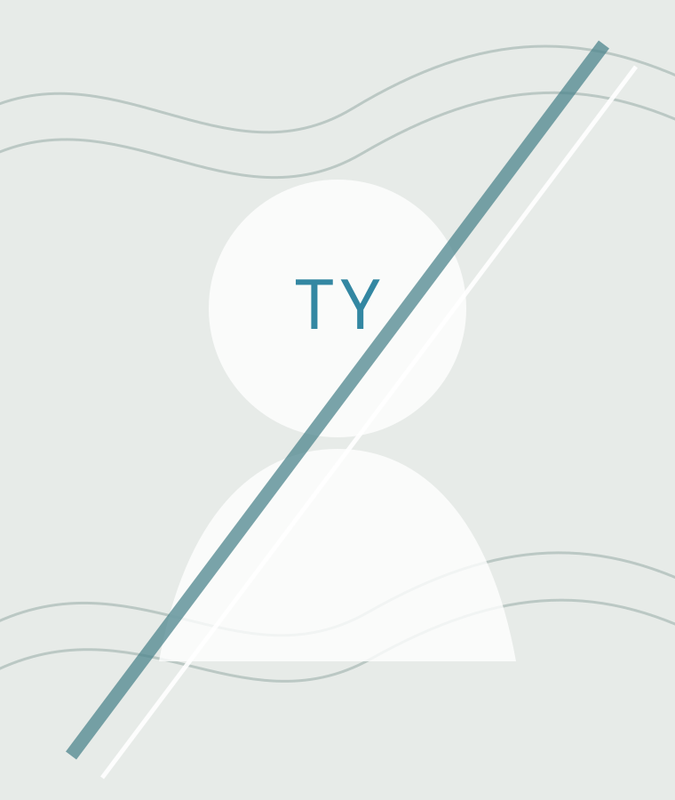
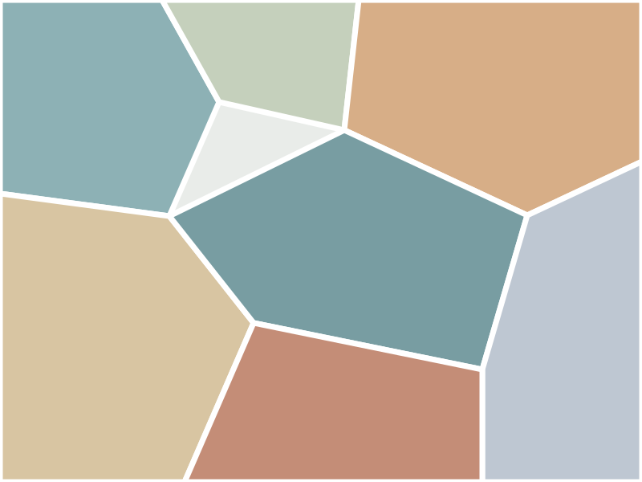

Thomas Yeo
I am a structural geologist investigating the deformation and mechanical behaviour of rocks across diverse tectonic settings, including continental crustal shear zones, collision zones, subduction zones, and shallow active faults, with a particular focus on rock behaviour during ductile deformation and the brittle–ductile transition.
My research integrates field-based structural geology, 3D digital outcrop modelling, SEM–EBSD analyses, quantitative stress–strain analysis, and machine-learning approaches to investigate deformation across multiple spatial and temporal scales. I aim to understand rock deformation mechanisms, fault-zone evolution, tectonic evolution, and the physical processes associated with earthquake rupture.
I am currently a postdoctoral researcher at the Department of Geology, National Museum of Natural Science.
tjy.yeo[@]geol.tsukuba.ac.jp
Please remove the brackets [ ] when sending an email.

